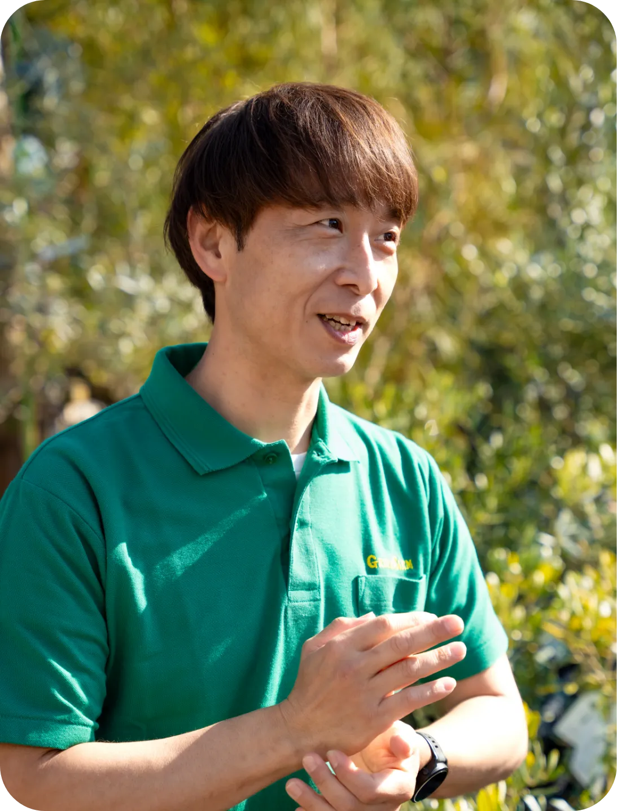
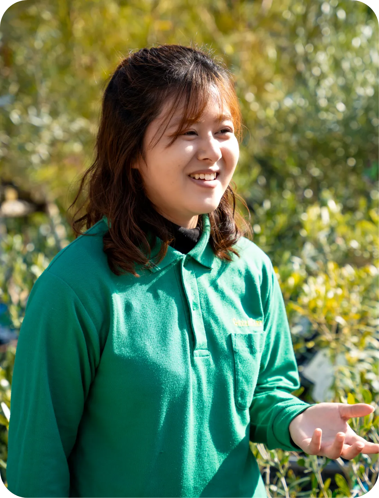
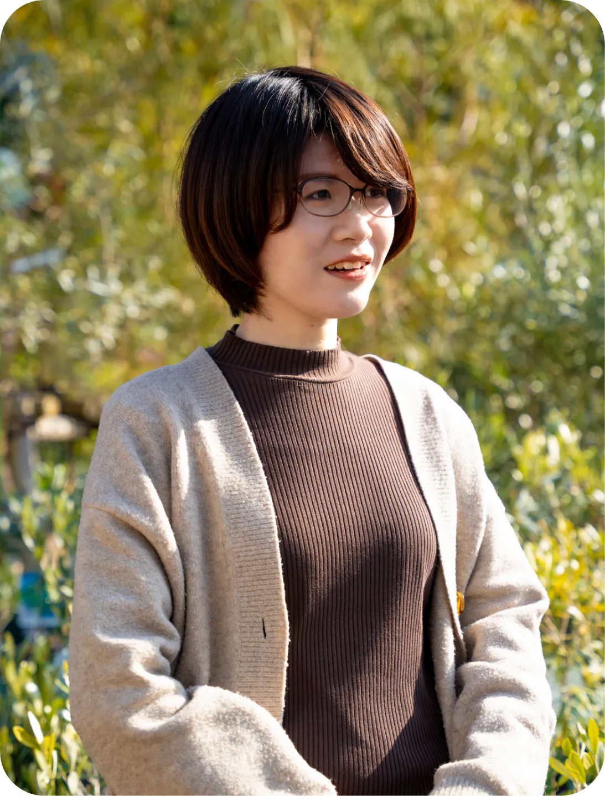
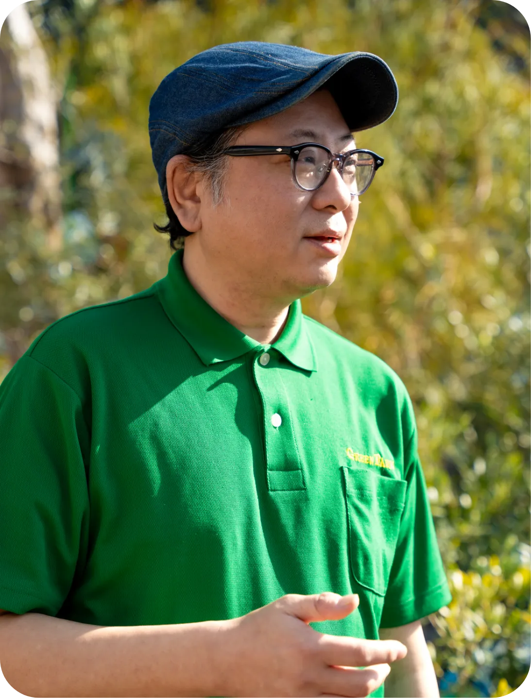
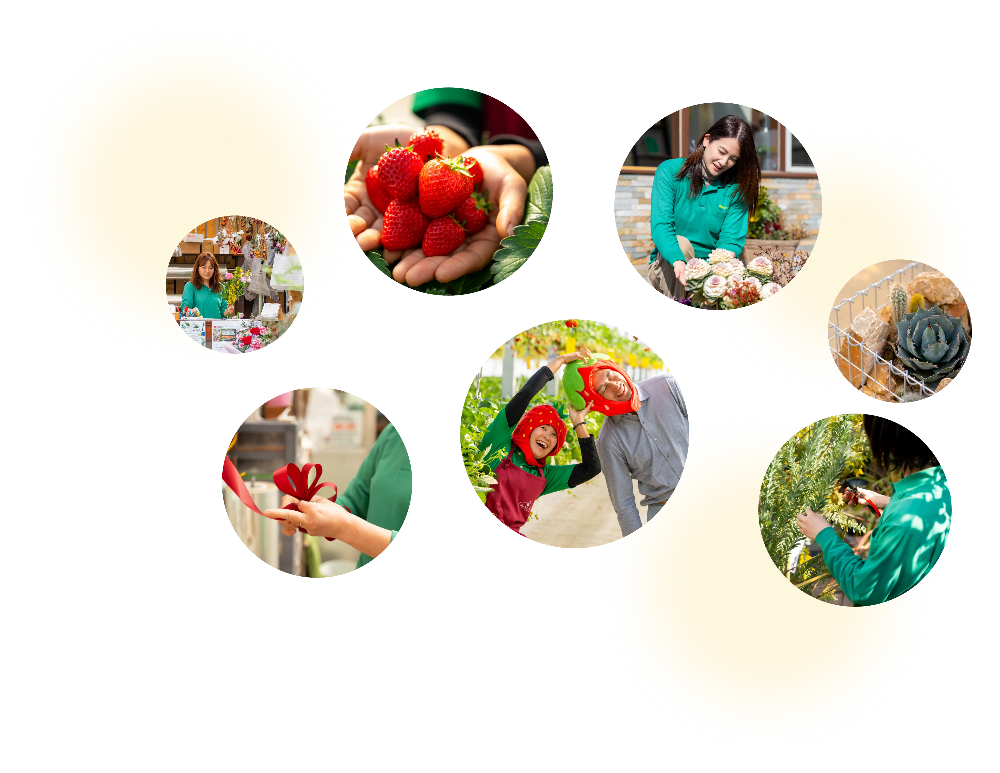

PERSON
グリーンファームで働く人たち
INTERVIEW
インタビュー

中途入社
植物担当バイヤー
I.S
仕事も遊びも全力。
答えがないからこそ、植物は面白い。
01.入社のきっかけは？
私の入社経緯は少し特殊です。20歳の頃、自動車整備の訓練校に通いながら本気で音楽のプロを目指し ていました。「ゆず」が大好きだったのですが、知人から「グリーンファームに、ゆずの知り合いがい るらしい」という噂を聞き、「会えるかも！」という不純な動機でアルバイトを始めたのが最初です（笑）。 当初は花に全く興味がなく、資材担当として肥料や用土を扱っていました。しかし、凝り性な性格が災いして 資材の知識を突き詰め始めると、ある日店頭で見た「ナンザンスミレ」に一目惚れ。 そこから一気に植物の魅力に取り憑かれました。その後、父の定年を機に25歳で正社員へ。「音楽を 続けながら、いつかは花屋を」という夢が、いつの間にかこの場所で結実していました。
02.今の仕事のやりがいは？
グリーンファームの最大の魅力は、圧倒的な「自由度」です。自分で「こうやりたい！」と手を挙げれば、新しい花の交配（育種）や、 オリジナルの鉢のデザイン、さらには「芋フェス」のようなイベント企画まで、自分のアイデアを形にさせてもらえます。 特に「育種」に関しては、2025年には業界で驚くほど注目され、他店でのイベントに300人以上の行列ができるなど、大きな手応えを感じました。 会社は単なる職場というより、私にとっては最高の「遊び場」のような感覚です。やるべきことさえしっかりすれば、自分のスタイルを尊重してくれる。 この信頼関係があるからこそ、楽しんで働き続けられるのだと思います。
03.これからの目標は？
現在は花のバイヤーを務めていますが、これからも「グリーンファームの看板」を背負いつつ、育種と趣味の山走り（トレイルランニング）の両立を極めていきたいですね。 出張先で朝4時に起きて山を20km走り、温泉に入ってから9時にお客様と商談する。そんな、趣味と仕事が地続きの働き方ができるのも、この仕事の特権です。 植物は、整備士の世界のように「正解が一つ」ではありません。答えがないからこそ、自分なりのアプローチで表現できる面白さがあります。今の知識や経験は問いません。 「これがやりたい！」という熱い想いさえあれば、ここはどこまでも羽ばたける場所です。私のように「最初は興味がなかった」 という方にも、植物を自分らしく楽しむ方法を伝えていきたいですね。

新卒入社
専門学校出身
植物担当
N.M
お客様の「やりたい」を形に。
植物のプロとして寄り添い続ける。
01.入社のきっかけは？
私は日本ガーデンデザイン専門学校で植物を学んでいたのですが、在学中の課題だったハンギングバスケットの材料を買いにグリーンファーム（戸塚深谷店）を訪れたことがきっかけです。 その時、圧倒的な品揃えとお店の雰囲気を見て「ここで働けたらいいな」と強く思いました。 卒業後の進路として切り花店なども検討しましたが、やはり専門学校で学んだ造園に近い分野や、植物全体を扱える環境に魅力を感じて当社を選びました。 面接では会長や社長を含む4名の方にお会いし、最初は驚きましたが、皆さんとてもフランクで話しやすい雰囲気だったことが印象に残っています。
02.今の仕事のやりがいは？
店舗での仕事において一番のやりがいは、お客様のご要望を形にできることです。「新築の庭に何を植えたらいいか分からない」「日当たりが悪くても育つ緑が欲しい」といった、漠然としたお悩みを持ってご来店されるお客様は多いです。 そうしたお客様と丁寧に対話し、その方に合った植物をご提案して「これで良かった！」と喜んでいただけた時が、最も嬉しい瞬間です。 入社後は、会社が推奨する「グリーンアドバイザー」の資格も取得しました。職場は人間関係が非常に良好で、上司や先輩もフラットに接してくれるため、日々の業務を通じて実践的な知識を深めていける環境です。 植物が好きな方はもちろん、人と話すことが好きな方なら、きっと大きなやりがいを感じられるはずです。
03.これからの目標は？
入社当初は商品の多さに圧倒されたり、未経験だった野菜苗の知識をゼロから勉強したりと、毎日が 新しい発見の連続でした。6年目を迎えた今、これまでに培った経験を土台に、さらに植物の専門知識 をアップデートしていきたいと考えています。今はまだ目の前のことに精一杯な部分もありますが、今 後はより幅広い植物の知識を身につけ、どんなお悩みを持つお客様に対しても、期待以上の選択肢を提 示できるようなプロフェッショナルを目指しています。お客様が何度も足を運びたくなるような、信 頼されるお店づくりに貢献していきたいです。

中途入社
金沢美術工芸大学出身
造園営業
S.S
お客様の理想を形にし、
何年先も頼られる存在へ。
01.入社のきっかけは？
大学時代から「お庭に関わる仕事がしたい」という想いを持っていました。前職も造園設計・営業の 仕事をしていましたが、5年ほど前に転職を考えた際、専門求人サイトで当社を見つけたのが始まり です。数ある会社の中でグリーンファームを選んだ理由は、「店舗を構えている強み」にあります。 一般的な造園会社は設計と施工のみを行うことが多いのですが、当社は店舗に豊富な植物の在庫があり、 お客様に実物を見せながらトータルで管理・提案ができます 。この「地域に根ざした独自のスタイル」 なら、より深い提案ができると感じたのが決め手でした。また、自宅から通いやすい距離だったことも、 長く働く上では大切なポイントでしたね。
02.今の仕事のやりがいは？
当社の営業は、最初のご提案から契約、そして施工管理まで一貫して一人が担当します。自分が描い た図面が形になっていくプロセスをすべて見届けられるのは、この仕事の醍醐味です。お客様との距 離が非常に近く、完成した際に直接「ありがとう」と感謝の言葉をいただける瞬間は、何度経験して も嬉しいものです。また、単発の仕事で終わらないのもこの仕事の魅力です。「数年前に庭をつくっ たSさんに、またお願いしたい」とリピートのご連絡をいただくことも多く、現在では年間40〜50 件ほどのお客様を担当しています。社長ともフランクに話せる風通しの良い社風なので、現場の意見 も通りやすく、過度な夜間作業などもありません。建築や店舗デザインなどの異業種から来た先輩も 「ここは働きやすい」と口を揃えるほど、腰を据えてキャリアを築ける環境だと実感しています。
03.これからの目標は？
正直なところ、今は目の前のお客様一人ひとりに全力で向き合うことで精一杯な毎日です。しかし, 将来的には、この「グリーンファーム」というブランドをもっと広めていきたいと考えています。現在 はエリアを限定して地域密着型で運営していますが、新しい仲間が増えれば、より広い範囲のお客様 に私たちの庭づくりを届けることができます。造園の経験がなくても、CADの操作経験や建築・デザ インへの興味があれば、そのスキルを存分に活かせる職場です。ぜひ私たちと一緒に、お客様の暮らし を彩るパートナーとして成長していきましょう。

新卒入社
日本大学出身
店長
N.D
30年経っても尽きない「緑」への探究心。
お客様の笑顔が原動力。
01.入社のきっかけは？
私が入社したのは約30年前。当時は就職が非常に難しい時期でしたが、大学のキャリア支援室でグリー ンファームの求人票を見つけたのがきっかけです。もともと興味があった分野ということもあり、 「まずはこの世界に飛び込んでみよう」と入社を決めました。ここまで長く続けてこられたのは、やは りこの仕事が自分に合っていたからだと思います。植物の世界は奥が深く、向き合えば向き合うほど面 白さが増していきます。また、仕事を続ける中で業界内のつながりも増え、自分自身の世界が広がって いく実感が持てたことも、大きなやりがいにつながっています。
02.今の仕事のやりがいは？
現在は店長として17年ほど店舗運営を任されていますが、一番の面白さは「仕入れ」からお客様への 「提案」まで一貫して関わることができる点です。市場や業者さんを介して、自分の目で「これは良 い」と納得して仕入れた植物を、直接店頭でお客様に手に取っていただける瞬間は何度経験しても嬉し いものです。時にはお客様から「こんな植物を探している」「このくらいの高さのものが欲しい」と 具体的なご要望をいただくこともあります。そんな時は市場や業者さんと連携して理想の一鉢を探し 出し、条件にぴったりのものをご提案できた際、深く感謝していただけることに誇りを感じています。
03.これからの目標は？
店長としてのキャリアは長いですが、今でも新しい挑戦の連続です。最近では、これまであまり深く 触れてこなかった「切り花」の勉強もし始めました 。外植えの植物とはまた違った奥深さがあり、 仕入れや管理など毎日が勉強の連続です。私の目標は、お客様が「またあのお店に行きたい」と、 何度でも戻ってきてくださるようなお店づくりを続けることです。新しい知識を積極的に取り入れ、 切り花も含めたトータルな提案力を磨くことで、地域の方々に長く愛される憩いの場を守り育てていきたいと考えています。

あなたの色が加わることで、
この場所はもっと鮮やかになります。
新しい一歩を、ここで一緒に。
ENTRY
あなたの個性を咲かせる職場。
ご応募を心よりお待ちしております！